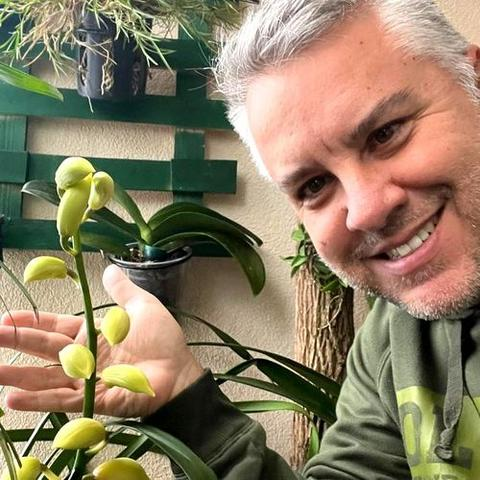
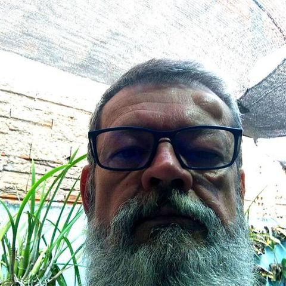
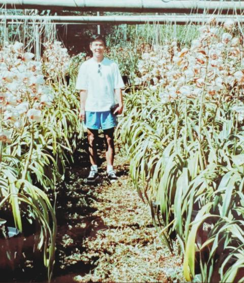

Perdido com tantas informações? Sem uma base sólida, qualquer dica parece certa — e é aí que começam os erros no cultivo.
Sua orquídea não floresce? Aprenda a identificar o que está impedindo a floração e como estimular a planta da forma correta.
Cada pessoa fala uma coisa? No curso, você aprende os fundamentos para decidir sozinho o que realmente funciona.
Tentativa e erro custa caro. Evite perder tempo, dinheiro e orquídeas aprendendo com um método estruturado.
Você não precisa decorar dicas. Precisa entender como a orquídea funciona para cultivar qualquer variedade com confiança.
Sua realidade é diferente. Clima, luminosidade, substrato e rotina influenciam no cultivo. Aprenda a adaptar os cuidados ao seu ambiente.
Pare de tratar sintomas. Descubra a causa dos problemas antes que eles prejudiquem suas orquídeas.
Um cultivo equilibrado gera resultados. Aprenda a relacionar luz, água, adubação, ventilação e substrato em um único método.
Mais do que um curso, um método. A Mandala de Cultivo ajuda você a entender rapidamente o que ajustar para obter melhores resultados.
Tenha segurança para cultivar. Aprenda a interpretar os sinais da planta e saiba exatamente o que fazer em cada situação.
Nada disso é culpa sua. É só falta do método certo — e é exatamente isso que você vai aprender.
Resultados reais de quem aprendeu o método e transformou o cultivo em casa.
"Depois do curso do Eduardo, participei da minha primeira exposição e ganhei 4 prêmios. O método dele mudou completamente a forma como eu cultivo."
— Vanessa

"Comprei vários cursos mas continuava confuso. Com o professor Eduardo aprendi a equilibrar minhas plantas com o ambiente que eu tinha. Os resultados apareceram e hoje meu cultivo é totalmente diferente. Existe um antes e um depois. Vale muito a pena."
— Rodrigo
"Mudou tudo. Hoje aprendi a usar os adubos corretos, cultivar no apartamento e já estou tendo lindas florações. Não é só um curso, é um aprendizado que muda totalmente a forma de cuidar das suas orquídeas. Vale muito a pena!"
— Meire

"Apesar de cultivar orquídeas há muito tempo, tinha muitas dúvidas por falta de informações. Depois que fiz o curso Doutor de Orquídea, melhorou muito por conta de informações específicas sobre plantio, adubação e cultivo sem enrolação, te ensina a cuidar melhor de acordo com a sua região. Foi o melhor investimento que fiz até hoje."
— Edson
"Minha maior dificuldade era a floração e manter elas vivas. Com o curso o número de raízes aumentou muito e de flores também. Aprendi sobre adubação correta, iluminação, rega e como eliminar pragas."
— Fabíola
A base de tudo: planta enraizada não morre fácil.
Flores que voltam temporada após temporada.
Prevenção simples, sem viver pulverizando veneno.
Acaba a dúvida de "quando e quanto".
Menos produto, menos perda de planta.
Plantas bonitas que duram anos com você.
Cinco fundamentos interligados — e você, o cultivador, no centro de tudo. Não são regras. É compreensão.
O que levaria anos aprendendo por tentativa e erro, você vai entender em semanas. Role a página e mergulhe no método.
66 aulas gravadas, organizadas do básico ao avançado. Assista no seu ritmo, de qualquer lugar.
Pare de tratar todas as orquídeas igual. Descubra a diferença entre epífitas e terrestres e entenda por que sua orquídea não floresce.
O local certo vale mais do que qualquer produto caro. Aprenda a identificar o ambiente ideal dentro da sua casa ou apartamento.
Substrato errado mata silenciosamente. Monte o seu próprio de acordo com a sua planta, sem depender de fórmula pronta.
Regar demais mata. Regar de menos também. Descubra qual tipo de irrigação funciona para a sua variedade e rotina.
Entenda orgânico, químico, liberação lenta e controlada. Saiba exatamente quando e como aplicar para raízes fortes e floração.
O coração do método. Os 5 fundamentos interligados com você no centro. O que levaria anos, você vai entender em semanas.
Epífita ou terrestre? A resposta muda o vaso, o substrato, a rega e a luz. Aprenda a ler a planta.
Cattleya, Phalaenopsis, Dendrobium, Miltonia — cada uma tem sua linguagem. Orientações práticas para cada espécie.
Aprenda a diferença entre luz direta e indireta e use a posição da sua janela como aliada da floração.
Aprenda o processo completo: quando replantar, escolha do vaso, preparo do substrato e limpeza correta.
Identifique no início e combata as principais pragas sem perder a planta.
41 aulas nos 11 módulos · ✨ 25 aulas bônus · = 66 aulas no total
Inclusos enquanto a promoção estiver no ar. (lista abaixo é exemplo — você vai me passar os reais)
Acesso ao grupo de alunos para tirar dúvidas, compartilhar resultados e cultivar junto com a comunidade.
Você poderá participar ao vivo de uma mentoria em grupo com o Eduardo — tire suas dúvidas em tempo real.
5 aulas exclusivas para quem cultiva em espaços pequenos, varandas e ambientes sem jardim.
Assista a sessões gravadas de mentorias reais, com dúvidas e casos de alunos resolvidos na prática.

Aos 14 anos, meu pai me deu 200 orquídeas e um desafio: cuide delas, faça florescer, venda e compre sua bicicleta. Fiz isso. Mas o maior prêmio não foi a bicicleta — foi ser "mordido pelo bichinho da orquídea".
Desde então nunca mais parei. Construí meu próprio laboratório de micropropagação, expandi o orquidário para 14 mil m² e por mais de três décadas forneci para a Cooperativa Veiling Holambra. Em 2017 fundei o Café com Orquídea, na Serra da Mantiqueira, onde diariamente via pessoas chegando com orquídeas murchas, informações erradas e quase desistindo.
Foi aí que entendi minha missão: encurtar o caminho de quem ama orquídeas. Nasceu então o Doutor de Orquídeas — e com ele a Mandala do Cultivo, um método desenvolvido na prática, em mais de 30 anos, testado em milhares de plantas.
"Aqui não tem teoria de internet. É o que funciona de verdade."
Acesso completo + bônus
Pagamento 100% seguro
Cultivar vira um momento seu, de calma e conexão. E o melhor: com resultado que todo mundo vê.